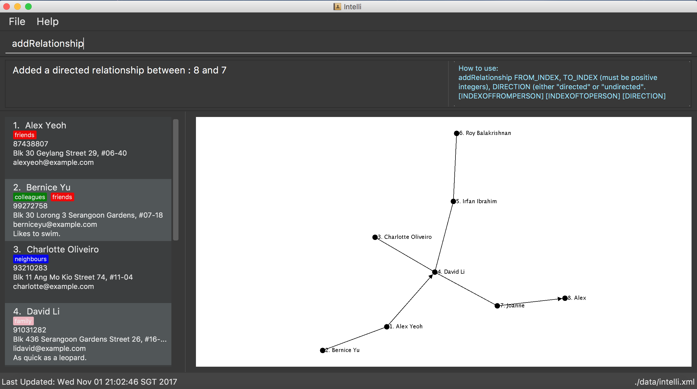

By: Team SE-EDU Since: Jun 2016 Licence: MIT
Updated by: CS2103-F10-B1
- 1. Quick Start
- 2. Features
- 2.1. Viewing help :
help - 2.2. Adding a person:
add - 2.3. Adding a relationship between two persons:
addRelationship - 2.4. Listing all persons :
list - 2.5. Sorting all persons :
sort - 2.6. Editing a person :
edit - 2.7. Locating persons:
find - 2.8. Deleting a person :
delete - 2.9. Removing a tag:
removeTag - 2.10. Setting a tag colour:
colourtag - 2.11. Selecting a person :
select - 2.12. Listing entered commands :
history - 2.13. Undoing previous command :
undo - 2.14. Redoing the previously undone command :
redo - 2.15. Clearing all entries :
clear - 2.16. Clearing command history :
clearhistory - 2.17. Adding remarks to a person:
remark - 2.18. Backing up:
backup - 2.19. Exiting the program :
exit - 2.20. Saving the data
- 2.1. Viewing help :
- 3. Features(Coming in v2.0)
- 4. FAQ
- 5. Command Summary
1. Quick Start
-
Ensure you have Java version
1.8.0_60or later installed in your Computer.Having any Java 8 version is not enough.
This app will not work with earlier versions of Java 8. -
Download the latest
addressbook.jarhere. -
Copy the file to the folder you want to use as the home folder for your Address Book.
-
Double-click the file to start the app. The GUI should appear in a few seconds.
 -
Type the command in the command box and press Enter to execute it.
e.g. typinghelpand pressing Enter will open the help window. -
Some example commands you can try:
-
list: lists all contacts -
addn/John Doe p/98765432 e/johnd@example.com a/John street, block 123, #01-01: adds a contact namedJohn Doeto the Address Book. -
delete3: deletes the 3rd contact shown in the current list -
exit: exits the app
-
-
Refer to the Features section below for details of each command.
2. Features
Command Format
-
Words in
UPPER_CASEare the parameters to be supplied by the user e.g. inadd n/NAME,NAMEis a parameter which can be used asadd n/John Doe. -
Items in square brackets are optional e.g
n/NAME [t/TAG]can be used asn/John Doe t/friendor asn/John Doe. -
Items with
… after them can be used multiple times including zero times e.g.[t/TAG]…can be used ast/friend,t/friend t/familyetc. -
Parameters can be in any order e.g. if the command specifies
n/NAME p/PHONE_NUMBER,p/PHONE_NUMBER n/NAMEis also acceptable.
2.1. Viewing help : help
Format: help
2.2. Adding a person: add
Adds a person to the address book
Format: add n/NAME p/PHONE_NUMBER e/EMAIL a/ADDRESS [t/TAG]…
| A person can have any number of tags (including 0) A person can be added with just the name being specified The Order of name, phone number, email, address and tags being added does not matter |
Examples:
-
add n/John Doe p/98765432 e/johnd@example.com a/John street, block 123, #01-01 -
add n/Betsy Crowe e/betsycrowe@example.com -
add n/Betsy Crowe t/friend e/betsycrowe@example.com a/Newgate Prison p/1234567 t/criminal -
add n/Betsy Crowe a/Newgate Prison p/1234567 e/betsycrowe@example.com -
add n/Betsy Crowe
2.3. Adding a relationship between two persons: addRelationship
Adds a relationship between two persons in the address book
Format: addRelationship FROM_INDEX TO_INDEX DIRECTION
Examples:
-
addRelationship 1 3 directed -
addRelationship 2 3 undirected
2.4. Listing all persons : list
Shows a list of all persons in the address book.
Format: list
2.5. Sorting all persons : sort
Shows a list of all persons in the address book sorted alphanumerically by name.
Format: sort
2.6. Editing a person : edit
Edits an existing person in the address book.
Format: edit INDEX [n/NAME] [p/PHONE] [e/EMAIL] [a/ADDRESS] [t/TAG]…
Examples:
-
edit 1 p/91234567 e/johndoe@example.com
Edits the phone number and email address of the 1st person to be91234567andjohndoe@example.comrespectively. -
edit 2 n/Betsy Crower t/
Edits the name of the 2nd person to beBetsy Crowerand clears all existing tags.
2.7. Locating persons: find
Finds persons whose details contain any of the given keywords.
Format: find KEYWORD [MORE_KEYWORDS]
Examples:
-
find John
ReturnsjohnandJohn Doe -
find Jo
ReturnsjohnandJohn Doe -
find Betsy Tim John
Returns any person having names or email addresses containingBetsy,Tim, orJohn -
find 92334266
Returns any person having phone number/email address/address containing92334266 -
find Alice 92334266
Returns any person having nameAliceAND/OR having phone number/email address/address containing92334266
2.7.1. Locating persons by name: find n/
Finds persons whose names contain any of the given keywords.
Format: find n/[KEYWORDS]
Examples:
-
find n/John
ReturnsjohnandJohn Doe -
find n/Jo
ReturnsjohnandJohn Doe -
find n/Betsy Tim John
Returns any person having namesBetsy,Tim, orJohn
| You can find multiple persons with a single name search |
2.7.2. Locating persons by address: find a/
Finds persons whose addresses contain any of the given keywords.
Format: find a/[KEYWORDS]
Examples:
-
find a/Serangoon
Returns any persons having addresses in Serangoon -
find a/seRangOOn
Returns any persons having addresses in Serangoon -
find a/Ser
Returns any persons having addresses containing the phraseSer -
find a/Serangoon Gardens
Returns any person having addresses containing the phraseSerangoonAND/ORGardens
2.7.3. Locating persons by email: find e/
Finds persons whose emails contain any of the given keywords.
Format: find e/[KEYWORDS]
Examples:
-
find e/alice@example.com
ReturnsAlice -
find e/AliCE@ExaMPle.com
ReturnsAlice -
find e/@example.com
Returns any persons having email addresses containing the suffix@example.com -
find e/@example.com @yahoo.com
Returns any person having email addresses containing the suffix@example.comor@yahoo.com
2.7.4. Locating persons by phone: find p/
Finds persons whose phone numbers contain any of the given keywords.
Format: find p/[KEYWORDS]
Examples:
-
find p/97734225
Returns any persons having phone numbers matching97734225 -
find p/9773
Returns any persons having phone numbers containing the sequence9773 -
find p/97734225 90329038
Returns any persons having phone numbers matching97734225OR90329038
2.7.5. Locating persons by tag: find t/
Finds persons whose tags contain any of the given keywords.
Format: find t/[KEYWORDS]
Examples:
-
find t/friends
Returns any persons having tags matchingfriends -
find t/FriEndS
Returns any persons having tags matchingfriends -
find t/frIe
Returns any persons having tags containing the phrasefrie -
find t/friends family
Returns any persons having tags matchingfriendsAND/ORfamily
2.8. Deleting a person : delete
Deletes the specified person from the address book.
Format: delete INDEX
Examples:
-
list
delete 2
Deletes the 2nd person in the address book. -
find Betsy
delete 1
Deletes the 1st person in the results of thefindcommand.
2.9. Removing a tag: removeTag
Removes the specific tag from the address book.
Format: removeTag TAG
Example:
-
removeTag friend
Removes the tagfriendfrom all the persons in the address book.
2.10. Setting a tag colour: colourtag
Sets a colour of a tag to a new colour.
Format: colourtag TAG COLOUR
Example:
-
colourtag friend red
Sets the colour of the tagfriendto red on next program start.
2.11. Selecting a person : select
Selects the person identified by the index number used in the last person listing.
Format: select INDEX
Examples:
-
list
select 2
Selects the 2nd person in the address book. -
find Betsy
select 1
Selects the 1st person in the results of thefindcommand.
2.12. Listing entered commands : history
Lists all the commands that you have entered in reverse chronological order.
Format: history
|
Pressing the ↑ and ↓ arrows will display the previous and next input respectively in the command box. |
2.13. Undoing previous command : undo
Restores the address book to the state before the previous undoable command was executed.
Format: undo
|
Undoable commands: those commands that modify the address book’s content ( |
Examples:
-
delete 1
list
undo(reverses thedelete 1command) -
select 1
list
undo
Theundocommand fails as there are no undoable commands executed previously. -
delete 1
clear
undo(reverses theclearcommand)
undo(reverses thedelete 1command)
2.14. Redoing the previously undone command : redo
Reverses the most recent undo command.
Format: redo
Examples:
-
delete 1
undo(reverses thedelete 1command)
redo(reapplies thedelete 1command) -
delete 1
redo
Theredocommand fails as there are noundocommands executed previously. -
delete 1
clear
undo(reverses theclearcommand)
undo(reverses thedelete 1command)
redo(reapplies thedelete 1command)
redo(reapplies theclearcommand)
2.15. Clearing all entries : clear
Clears all entries from the address book.
Format: clear
2.16. Clearing command history : clearhistory
Clears the command history.
Format: clearhistory
|
After the command history is cleared, you will not be able to undo any previous commands. |
2.17. Adding remarks to a person: remark
Adds a remark to a person in the address book
Format: remark INDEX r/REMARK
Can be used to keep track of the relationship status between people in the address book. eg. What is the relationship between person with INDEX 1 and person with INDEX 3 within in the address book. Using the same command on the same INDEX will overwrite the previous remark.
Examples:
-
remark 3 r/Is the husband of Jessie -
remark 2 r/Is the wife of John
2.18. Backing up: backup
Backs up the current address book to a fixed location (addressbook.xml.bak in current working directory).
|
Any existing backup at the same location will be overwritten after running this command. |
2.19. Exiting the program : exit
Exits the program.
Format: exit
2.20. Saving the data
Address book data are saved in the hard disk automatically after any command that changes the data.
There is no need to save manually.
3. Features(Coming in v2.0)
3.1. Add a relationship
Adds a relationship between two persons.
Format: addRelationship SOURCE_INDEX DESTINATION_INDEX DIRECTION
Examples:
-
list
addRelationship 2 3 directed
Adds a directed relationship starting from the 2nd person to the 3rd person in the list. -
list
addRelationship 2 3 undirected
Adds an undirected relationship between the 2nd person and the 3rd person in the list.
3.2. Add a named relationship
Adds a relationship between two persons and gives this relationship a name.
Format: addNamedRelationship SOURCE_INDEX DESTINATION_INDEX DIRECTION NAME
Examples:
-
list
addRelationship 2 3 directed knows
Adds a directed relationship namedknowsstarting from the 2nd person to the 3rd person in the list. -
list
addRelationship 2 3 undirected cousins
Adds an undirected relationship namedcousinsbetween the 2nd person and the 3rd person in the list.
3.3. Add a confidence estimate
Adds a confidence estimate for an attribute of a person.
Format: addConfidenceEstimate INDEX ATTRIBUTE_TYPE ESTIMATE
Example:
-
list
addConfidenceEstimate 2 Address 0.8
Adds a confidence estimate of 0.8 to theAddressof the 2nd person in the list.
3.4. Delete a confidence estimate
Deletes a confidence estimate for an attribute of a person.
Format: deleteConfidenceEstimate INDEX ATTRIBUTE_TYPE
Example:
-
list
deleteConfidenceEstimate 2 Address
Deletes a confidence estimate from theAddressof the 2nd person in the list.
3.5. List all related persons : listrelated
Shows a list of all persons in the address book related to a given person.
Format: listrelated INDEX
3.6. View shortest relationship path between two persons : viewpath
Shows the shortest path of people to contact in order to reach a destination person .
Format: viewpath START_INDEX END_INDEX
3.7. User login
Enters a password to check if user is authorised to access information in Intelli.
Any data (i.e. the person list and the graph) will only be displayed after successful login.
Format: login PASSWORD
3.8. Set a password
Sets a password to protect Intelli from other users.
Format: set PASSWORD
|
To set a new password, a user must first be logged into Intelli with the previous password. |
|
The default password is |
4. FAQ
Q: How do I transfer my data to another Computer?
A: Install the app in the other computer and overwrite the empty data file it creates with the file that contains the data of your previous Address Book folder.
5. Command Summary
-
Add
add n/NAME p/PHONE_NUMBER e/EMAIL a/ADDRESS [t/TAG]…
e.g.add n/James Ho p/22224444 e/jamesho@example.com a/123, Clementi Rd, 1234665 t/friend t/colleague -
Clear :
clear -
Delete :
delete INDEX
e.g.delete 3 -
Edit :
edit INDEX [n/NAME] [p/PHONE_NUMBER] [e/EMAIL] [a/ADDRESS] [t/TAG]…
e.g.edit 2 n/James Lee e/jameslee@example.com -
RemoveTag :
removeTag TAG
e.g.removeTag friend -
Find :
find KEYWORD [MORE_KEYWORDS]
e.g.find James Jake -
List :
list -
Sort :
sort -
Help :
help -
Select :
select INDEX
e.g.select 2 -
History :
history -
Undo :
undo -
Redo :
redo -
Remark
remark INDEX r/REMARK
e.g.remark 2 r/The husband of Juliet Lee